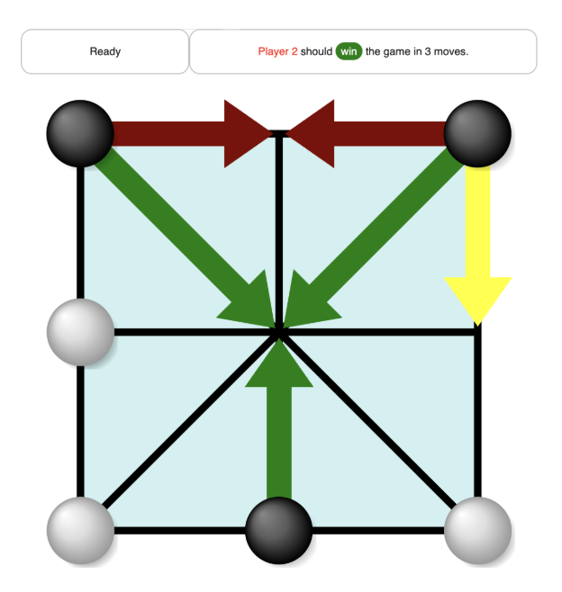
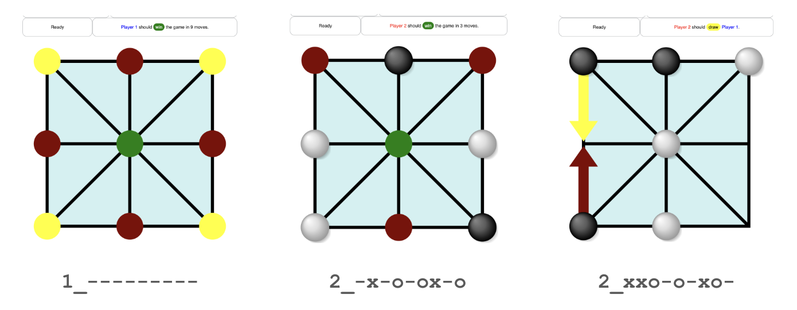
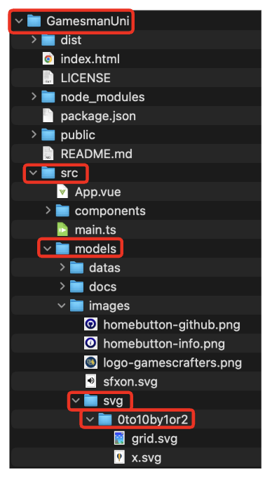
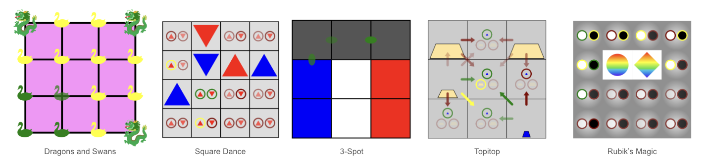
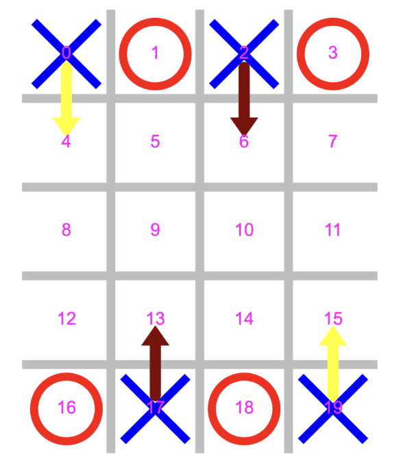
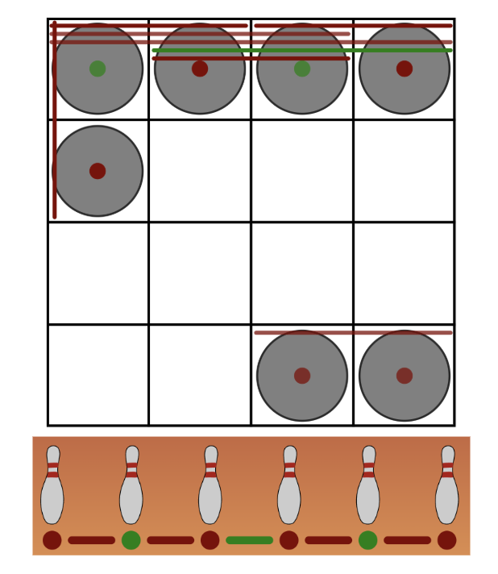
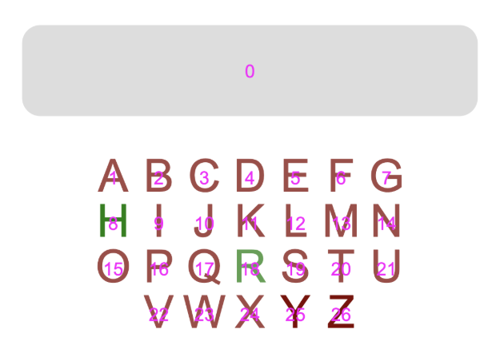

Using AutoGUI
The Image AutoGUI system is what lets GamesmanUni draw a board, pieces, and clickable move buttons for your game without you writing any frontend code. You give it JSON data, position strings, and move strings, and it gives you an interactive board.
The Big Picture
When you play a game in GamesmanUni with an Image AutoGUI, Uni needs three things:
- The game’s Image AutoGUI JSON data for the variant (layout, images, settings).
- The current position’s AutoGUI position string.
- A list of legal moves’ AutoGUI move button strings.
Your backend (Classic/One/Puzzles) decides what the state is and what moves exist. The AutoGUI decides how to draw that state and those moves on the screen.

AutoGUI JSON Structure
Every game variant has an Image AutoGUI JSON object that lives in
GamesCraftersUWAPI.
Achi Example
{
"defaultTheme": "basic",
"themes": {
"basic": {
"space": [100, 100],
"background": "achi/board.svg",
"centers": [
[10, 10], [50, 10], [90, 10],
[10, 50], [50, 50], [90, 50],
[10, 90], [50, 90], [90, 90]
],
"charImages": {
"o": { "image": "general/whitepiece.svg", "scale": 15 },
"x": { "image": "general/blackpiece.svg", "scale": 15 }
},
"circleButtonRadius": 6.5,
"arrowWidth": 4,
"entitiesOverArrows": true,
"sounds": {
"x": "general/place.mp3",
"y": "general/slide.mp3"
},
"animationType": "simpleSlides"
}
}
}
AutoGUI image paths (like achi/board.svg or general/whitepiece.svg) are
always relative to:
GamesmanUni/src/models/images/svg/JSON Fields
Board Geometry & Images
space: [width, height]: coordinate system for the board.centers: [[x0, y0], [x1, y1], ...]: points where entities/buttons are centered.background: path to the background SVG.foreground: optional overlay SVG drawn on top of entities.
Pieces and Move Button Images
charImages maps characters used in your position/move strings to images:
"charImages": {
"o": { "image": "general/whitepiece.svg", "scale": 15 },
"x": { "image": "general/blackpiece.svg", "scale": 15 },
"A": { "image": "mygame/custom_button.svg", "scale": 1.2 }
}- Characters here represent pieces.
scaleis relative tospace.

Move Button Styling & Text
circleButtonRadius: radius for default circular A-type buttons.lineWidth: thickness for line (L_...) move buttons.arrowWidth: thickness for arrow (M_...) move buttons.entitiesOverArrows: iftrue, pieces are drawn over arrows.textEntityFontSize: size of text entities (like Nim pile labels).textButtonFontSize: size of text move buttons (like “1”, “2”, “3” in Odd or Even).
Sound and Animation
sounds: maps single characters to sound files:"sounds": { "x": "general/place.mp3", "y": "general/slide.mp3" }ambience: optional looping background sound.animationType: usually"entityFade"or"simpleSlides".defaultAnimationWindow ([start, end]): which indices are to be used for inferring animation.
Uploading SVGs to GamesmanUni
GamesmanUni needs to know where your board and piece SVGs live. Place them under:
GamesmanUni/src/models/images/svg/Typical organization for a game with ID mygame:
GamesmanUni/src/models/images/svg/
general/...
chess/...
mygame/
board.svg
foreground.svg
piece_o.svg
piece_x.svg
button_A.svg
Whenever possible, reuse existing SVGs in general/, chess/, or other game
directories to keep the repo small.

UWAPI Files to Edit
AutoGUI JSON is provided by GamesCraftersUWAPI. You typically edit two files:
games/__init__.py: registers your game and its variants.games/image_autogui_data.py: defines a function that returns AutoGUI JSON.
1. Add Your Game in games/__init__.py
'mygame': Game(
name='My Game',
variants={
'regular': Variant(
name='Regular',
data_provider=GamesmanPuzzles,
data_provider_game_id='mygame',
data_provider_variant_id='regular',
gui='v3'
)
},
is_two_player_game=True,
gui='v3'
),2. Provide AutoGUI JSON in image_autogui_data.py
def get_mygame(variant_id):
# variant_id might be 'regular', '3x3', '4x4', etc.
return {
"defaultTheme": "basic",
"themes": {
"basic": {
"space": [100, 100],
"centers": [...],
"background": "mygame/board.svg",
"charImages": {
"o": {"image": "general/whitepiece.svg", "scale": 15},
"x": {"image": "general/blackpiece.svg", "scale": 15}
},
"animationType": "entityFade"
}
}
}
image_autogui_data_funcs = {
# ... existing entries ...
"mygame": get_mygame,
}Providing AutoGUI Position and Move Strings
AutoGUI doesn’t know your rules. Your backend is responsible for providing:
- Formal position strings (for the solver/backend).
- AutoGUI position strings (for drawing entities).
- Formal move strings (your usual move IDs).
- AutoGUI move button strings (for drawing clickable buttons).
Python Games on GamesCraftersUWAPI
For Python games on UWAPI (should be subclasses of AbstractVariant), you implement:
class MyGameVariant(AbstractVariant):
...
def start_position(self):
return {
"position": <formal position string>,
"autoguiPosition": <autogui position string>
}
def position_data(self, position):
return {
"position": position,
"autoguiPosition": <autogui position string>,
"value": <value of this position>,
"remoteness": <remoteness>,
"moves": [
{
"move": <formal move string>,
"autoguiMove": <autogui move button string>,
"position": <child formal position>,
"autoguiPosition": <child autogui position>,
"value": <child value>,
"remoteness": <child remoteness>
},
...
]
}autoguiPositionis the string that encodes which characters go at which centers.autoguiMoveis one of the move button formats described below.
Puzzles in GamesmanPuzzles
For puzzles, you implement:
def toString(self, mode):
if mode == StringMode.HUMAN_READABLE:
return <formal position string>
elif mode == StringMode.AUTOGUI:
return <autogui position string>
def moveString(self, move, mode):
if mode == StringMode.HUMAN_READABLE:
return <formal move string>
elif mode == StringMode.AUTOGUI:
return <autogui move button string>The rest of the puzzle implementation (move generation, doMove, etc.) works as usual; AutoGUI only cares about these string outputs.
GamesmanClassic & GamesmanOne
For Classic games, you implement functions like:
StringToPositionPositionToAutoGUIStringMoveToAutoGUIString
If you want the AutoGUI position string to be different from the formal position string, you also
implement PositionToString. For some games with “appearance-only” info (like which
way a domino is drawn), you may need an AutoGUI-specific DoMove as well.
GamesmanOne has its own pattern (similar idea: provide both formal and AutoGUI strings). Check existing One games that use Image AutoGUI for templates.
AutoGUI Move Button String Formats
AutoGUI knows how to draw several built-in kinds of move buttons based on the prefix letter:
A-Type: Point Buttons
A_char_center_sound
- Default circle button:
A_-_5_x: circle at center 5, plays sound'x'. - Custom button using an image from
charImages:A_B_3_-.
Below are examples of games that use custom move buttons.

M-Type: Arrow Buttons
M_center1_center2_sound
- Arrow from center 1 to center 4:
M_1_4_x.

L-Type: Line Buttons
L_center1_center2_sound
- Line between centers 29 and 45:
L_29_45_x.

T-Type: Text Buttons
T_text_center_sound
- Button that says “3” at center 10:
T_3_10_x. - Button that says “hello” at center 4:
T_hello_4_-.

There are also more advanced “LX” miscellaneous line types (Bezier curves, arcs, etc.), and if your move strings don’t match any of these formats, AutoGUI will fall back to drawing a list of text buttons below the board labeled by the move names.
Animation Types
The animationType field controls how entities animate when you click a move:
"entityFade": fades out pieces that disappear and fades in pieces that appear."simpleSlides": does fades plus simple sliding when a single instance of a character moves from one center to another.
Both animation types compare the parent and child AutoGUI position strings, looking at the entity substring to see which indices changed.
Design
- What are all the entities? What objects change or move in the interface?
- What are all the possible move buttons that may appear on the interface?
- What SVGs are needed for the background, foreground, and entities?
- What are all the coordinates/centers that will be used? Coordinates are needed to specify the centers of entities and move tokens. They are also needed for the endpoints of arrow move buttons and line move buttons.
- Think about other settings (e.g., whether pieces should be drawn above or below arrow move buttons, how thick arrow move buttons should be, etc.).
Once this is wired up, you can change the look of your game (board art, piece styles, button shapes, animations) just by editing JSON and SVGs without making changes to Uni’s core code.